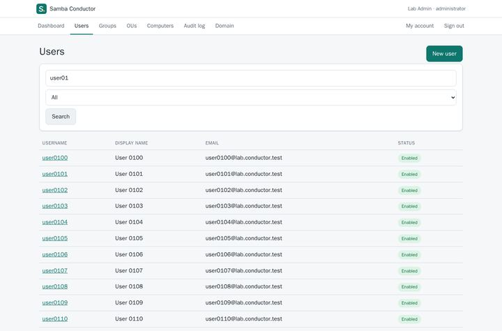
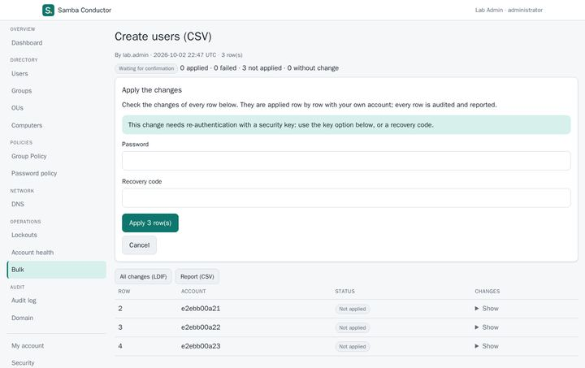
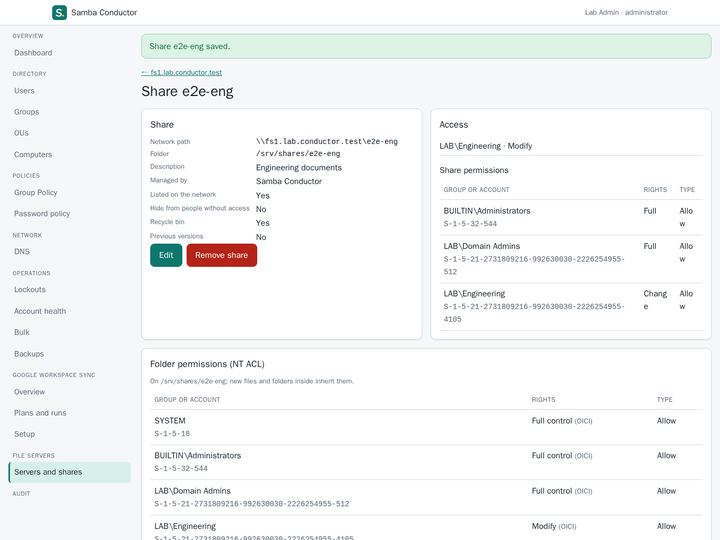
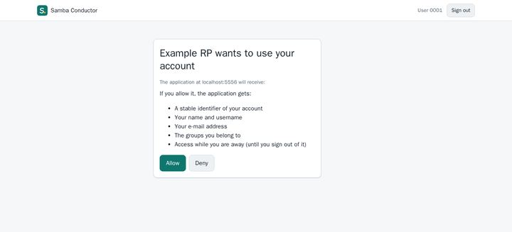
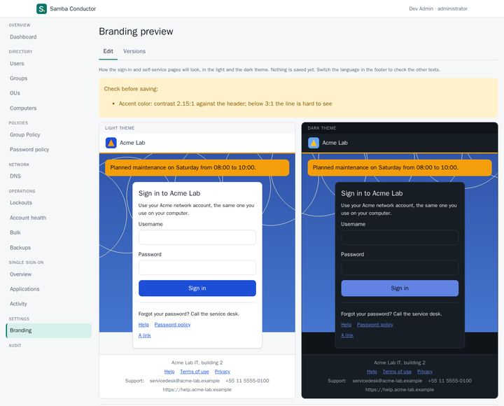
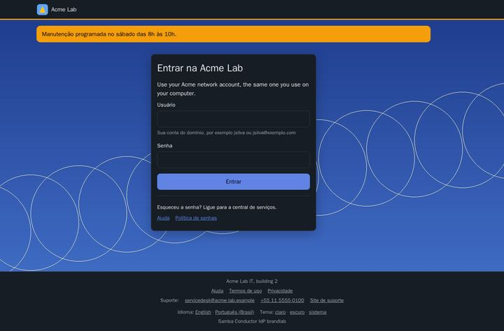

Gallery
See what we are building.
Screens of our projects as they are today, captured in a test lab with made-up people, names and addresses. Select an image to see it larger.
Videos
Short demos. The player is loaded from YouTube (youtube-nocookie.com) only when you choose to play a video; until then nothing is requested from YouTube.
Samba Conductor: administration
The web administrator for Samba Active Directory. Every change shows the exact directory writes before it is applied.
-

Dashboard: the domain at a glance, locked and expiring accounts, recent activity. -

Users: search the directory and open any account. -

Exact changes: the LDAP writes are shown before you apply them. Passwords are never displayed. -

Bulk changes from a CSV file: checked row by row, applied only after you sign in again. -

Encrypted backups and restore drills that prove a backup can really be restored. -

File servers: a share with its access, share permissions and folder permissions in one place.


Samba Conductor: sign-in and self-service
Single sign-on for other applications and a self-service portal for everyone in the domain, with your own branding.
-

Single sign-on with OpenID Connect and SAML 2.0, using the domain account. -

Consent: what an application receives about you, before you allow it. -

Branding preview in the light and dark theme, with a contrast check before saving. -

The self-service portal with that branding: account, contact details, password and security keys. -

The branded sign-in page, in Portuguese and the dark theme.


Basalt OS
Follow along
New screens land as the work does.
More about Samba Conductor, and how to install it, is on its project page; the source and documentation are on github.com/openbasalt/samba-conductor. Follow the projects for new screens and videos.